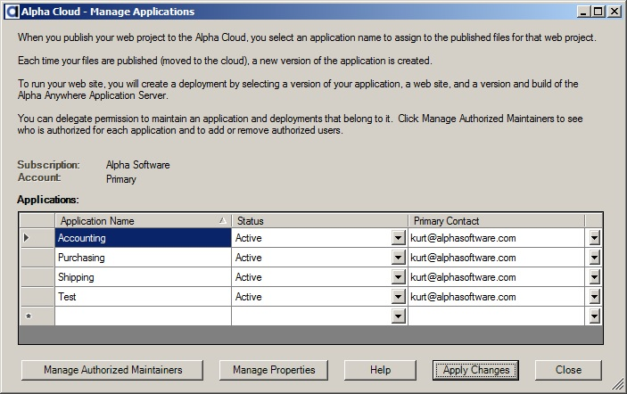
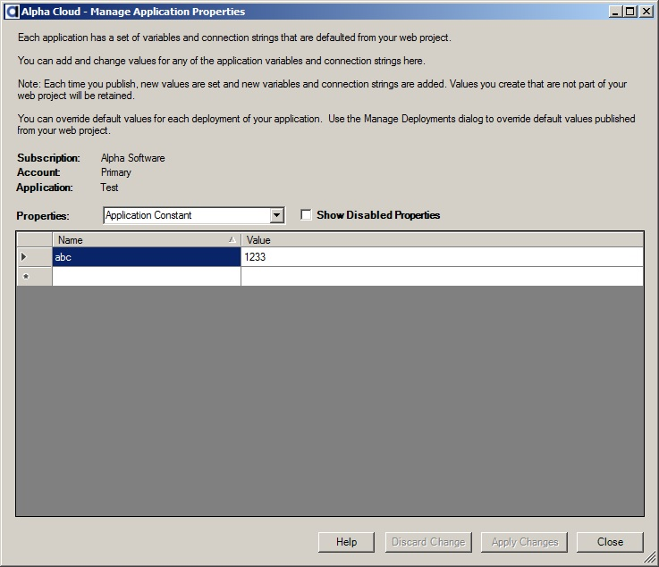
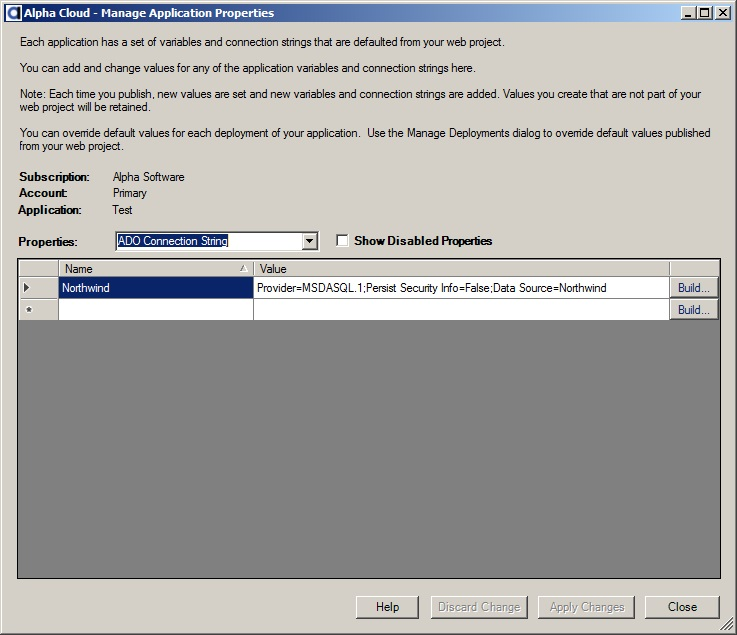
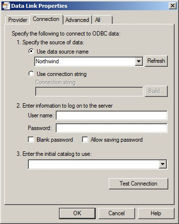
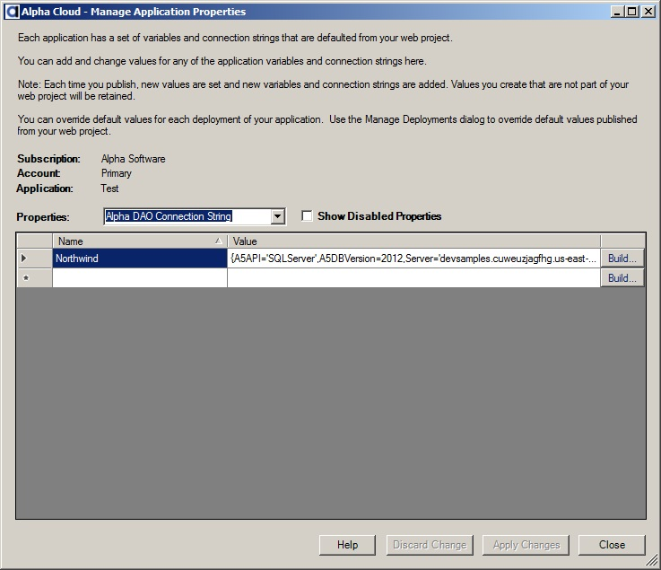
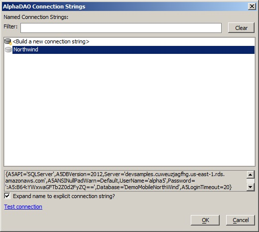
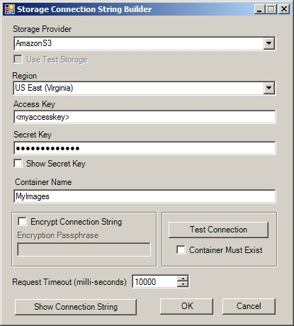

- Enter a name for your new application>
- The default status is "Active", but you can choose to create the application with a "Disabled" status.
- The default primary contact is the account primary contact, but you can change it.

Managing Applications
Managing Application Properties
Applications are fairly simple objects. They have a status and primary contact, and any users you authorize to make changes to them or deploy.
Application names must be unique within an account.
To manage your applications from within Alpha Anywhere:
Web projects you create in the Alpha Anywhere development environment generally include one or more connection strings for ADO, Alpha DAO, or Storage. The connection strings you define in the Alpha Anywhere development environment are automatically published to Alpha Cloud along with your web project. After your application is published, you can view and edit connection strings and add constants you would like to be available to your running application.
Important Note: Connection strings are set in the Alpha Anywhere publish profile. These connection string values will always replace existing values in Alpha Cloud each time you republish your application. You can also override these values for each deployment of your application. Those overrides will take precedence when your application is deployed. See Managing Deployment Properties for more on deployment properties
Managing Application Constants
Managing ADO Connection Strings
Managing Alpha DAO Connection Strings
Managing Storage Connection Strings
Alpha Cloud maintains application constants in the deployed configuration file. Each constant has a name and a string value. You can access the values of those constants using the following XBasic syntax in A5W pages and server side event scripts:
Constants You Define
Context.ApplicationConfiguration.GetConstant("<My Application Constant Name>")
Alpha Defined Constants
Context.ApplicationConfiguration.<Predefined Alpha Constant Name>
For Example: Context.ApplicationConfiguration.ServerProduct
Alpha Cloud automatically populates the following Alpha constants for applications deployed on Alpha Cloud:
ServerProduct - The Alpha Anywhere Application Server product your application is deployed on
To maintain constants you define:
Open the the Managing Applications Dialog discussed above.
Click on the row of the application you want to manage properties for.
Click on the button labeled "Manage Properties".
The Manage Application Properties dialog will display.
Select "Application Constant" from the properties drop down.
To add a new constant:
Click the name field of the new row (the row that has a * to the left) and enter a name for your constant.
Tab into or click the value field of the same row and enter the value you want to set.
To edit an existing value:
Click the value field of the same row and enter the value you want to set.
Note: Constants can not be deleted, but can be disabled. Check the Show Disabled Properties check box to show the status column and update properties to "Active" or "Disabled".
When you have finished making changes, click "Apply Changes" to update the cloud.
To undo your changes instead of saving them, click "Discard Changes" to reset the data.
Open the the Managing Applications Dialog discussed above.
Click on the row of the application you want to manage properties for.
Click on the button labeled "Manage Properties".
The Manage Application Properties dialog will display.
Select "ADO Connection String" from the properties drop down.
To add a connection string:
Click the name field of the new row (the row that has a * to the left) and enter a name for your constant.
Tab into or click the value field of the same row and enter the value you want to set.
To edit an existing value:
Click the value field of the same row and enter the value you want to set.
Note: Connection strings can not be deleted, but can be disabled. Check the Show Disabled Properties check box to show the status column and update properties to "Active" or "Disabled".
You can also click the button in the row labed "Build..." to open the ADO connection string dialog.
When you have finished making changes, click "Apply Changes" to update the cloud.
To undo your changes instead of saving them, click "Discard Changes" to reset the data.
Open the the Managing Applications Dialog discussed above.
Click on the row of the application you want to manage properties for.
Click on the button labeled "Manage Properties".
The Manage Application Properties dialog will display.
Select "Alpha DAO Connection String" from the properties drop down.
To add a connection string:
Click the name field of the new row (the row that has a * to the left) and enter a name for your constant.
Tab into or click the value field of the same row and enter the value you want to set.
To edit an existing value:
Click the value field of the same row and enter the value you want to set.
Note: Connection strings can not be deleted, but can be disabled. Check the Show Disabled Properties check box to show the status column and update properties to "Active" or "Disabled".
You can also click the button in the row labed "Build..." to open the Alpha DAO connection string dialog.
When you have finished making changes, click "Apply Changes" to update the cloud.
To undo your changes instead of saving them, click "Discard Changes" to reset the data.
Open the the Managing Applications Dialog discussed above.
Click on the row of the application you want to manage properties for.
Click on the button labeled "Manage Properties".
The Manage Application Properties dialog will display.
Select "Storage Connection String" from the properties drop down.
To add a connection string:
Click the name field of the new row (the row that has a * to the left) and enter a name for your constant.
Tab into or click the value field of the same row and enter the value you want to set.
To edit an existing value:
Click the value field of the same row and enter the value you want to set.
Note: Connection strings can not be deleted, but can be disabled. Check the Show Disabled Properties check box to show the status column and update properties to "Active" or "Disabled".
You can also click the button in the row labed "Build..." to open the storage connection string dialog.
When you have finished making changes, click "Apply Changes" to update the cloud.
To undo your changes instead of saving them, click "Discard Changes" to reset the data.